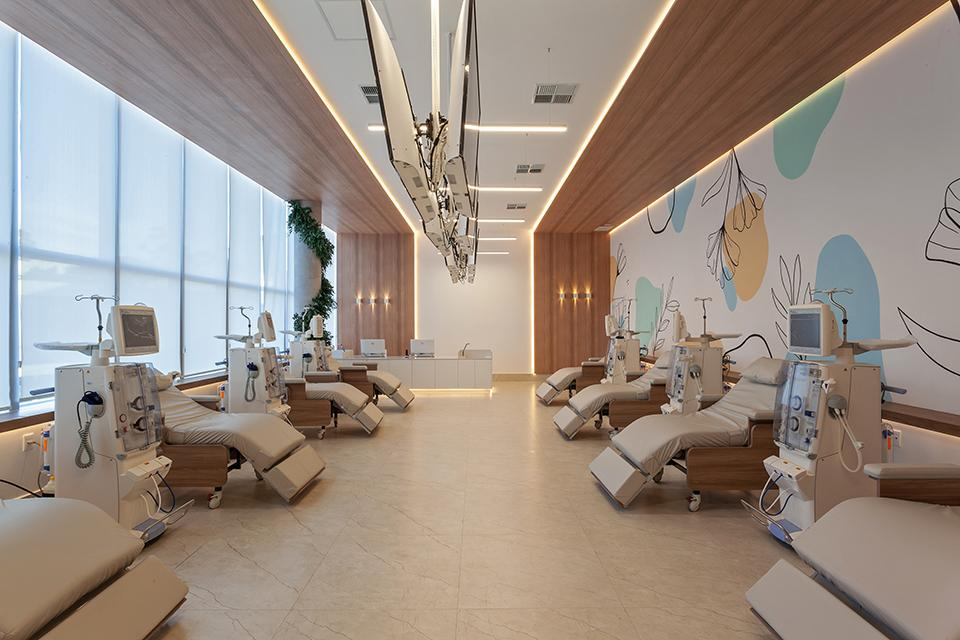

Dr. Marcus Vance, MD, FASN
Medical Director & Chief Nephrologist
Board-certified in Internal Medicine & Nephrology. Leads clinical quality protocols, Kt/V optimization, and transplant referrals.
Book Consultation
Medical Director & Chief Nephrologist
Board-certified in Internal Medicine & Nephrology. Leads clinical quality protocols, Kt/V optimization, and transplant referrals.
Book Consultation
Director of Peritoneal & Home Therapies
Specializes in automated peritoneal dialysis, nocturnal hemodialysis, and preserving residual kidney function.
Book Consultation
Interventional Nephrologist
Oversees AV fistula maturation, Doppler ultrasound diagnostics, and minimally invasive access maintenance.
Request Referral
Charge Dialysis Nurse
14 years in acute and chronic hemodialysis. Certified Nephrology Nurse overseeing daily chair safety and cannulation training.
Contact Nursing Desk
Board-Certified Renal Dietitian
Board-Certified Specialist in Renal Nutrition helping patients manage potassium, phosphorus, protein, and fluid goals.
Schedule Nutrition Review
Renal Social Worker & Insurance Navigator
Assists with Medicare ESRD enrollment, transportation scheduling, vocational support, and emotional wellness.
Connect with SupportWe invest in lower patient-to-nurse ratios and continuous nephrology education so you never feel rushed.
Dedicated Certified Nephrology Nurses (CNN) stay attentive to your comfort, vitals, and fistula care every session.
Board-certified nephrologists round in-person each week to fine-tune dry weight, medications, and lab targets.
Direct after-hours phone access to an on-call renal nurse and nephrologist whenever questions arise.

Every month, your nephrologist, charge nurse, dietitian, and social worker meet to review your Kt/V adequacy, vascular access flow, and personal wellness goals—sharing clear summaries directly in your Patient Portal.
View Sample Care Plan in PortalSchedule a consultation with Dr. Vance, Dr. Rostova, or our renal nutrition specialists.